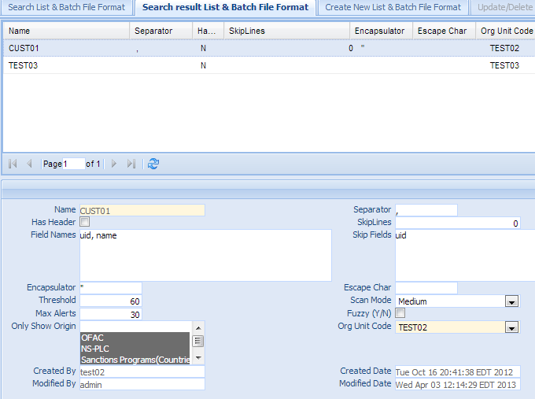
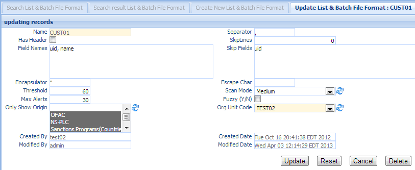
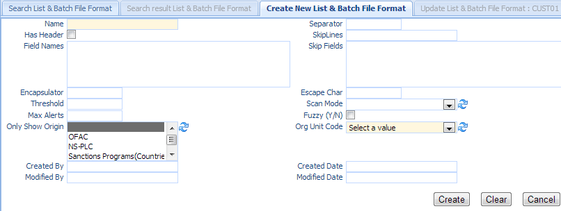

File Format¶
File format define the format of the file used in the list upload or/and batch file scan. Click the File Format in the left navigation menu under Resource, a new List/Batch File Format Tab folder will be created in the right panel.
There are 3 sub-Tab folders, Search File Format, Search Result File Format and Create New File Format.
Note
Some of the fields is only used by sanction List file format, while other fields is only used by batch file format .
Search File Format¶
Search Criteria
| Field Name | Description |
|---|---|
| Name | Name of the file format, must be unique within the system. |
| Separator | Field separator. Default is , |
| SkipLines | The number of lines in the file to discard (including the header, if present). Default is 0. |
| Skip Fields | A comma separated list of field names to skip in the input file. |
| Encapsulator | The character optionally used to surround values to preserve characters such as the CSV separator or whitespace. |
| Escape Char | The character used for escaping CSV separators or other reserved characters. |
| Field Names | A comma separated list of field names in the input file. |
| Threshold | Threshold is a matching percentage that must be exceeded to allow the result as an alert. |
| Default is 30% or above match will be considered as an alert.. | |
| Scan Mode | The mode that screening engine uses to do the search. |
| Currently there are three scan modes: Loose, Medium and Strict. | |
| Max Alerts | Set maximum alerts returned. Default is 50. |
| CreatedByDate | Date and Time when this entry is created |
| CreatedByUser | User who create this entry. |
| ModifiedByDate | Last modified date and time. |
| ModifiedByUser | Last modified user. |
| AND | Select AND radio box if you want those criteria add together. |
| OR | Select OR radio box if you want to get the result if either criteria meet |
Functional buttons¶
- Find: – click Find button to search.
- Clear:– click Clear button to clear all the criteria.
Search Result File Format¶
The top part is the table, shows the list of the File Format that meet the search criteria. The bottom part is the details of the selected entry
Update/Delete File Format¶
Double Click the selected record in the table to modify this entry. A new Tab folder Update/Delete List/Batch File format will be added, as show below.
Functional buttons¶
- Update: – make changes on the File Format, then save and switch back to “Search result List/Batch File Format” Tab. Some of the fields in this form are read only, like Name, created/modified user and date.
- Reset:– reset the data to its initial value, discard all the changes.
- Cancel:– Cancel this change and switch back to “Search result List/Batch File Format” Tab.
- Delete:– Delete this entry, then switch back to “Search result List/Batch File Format” Tab.
Create New File Format¶
Select the “Create New List/Batch File Format” Tab to create a new entry.
| Field Name | Description |
|---|---|
| Name | Name of the file format, must be unique within the system. |
| Separator | Field separator. Default is , |
| Has Header | Checkbox; selected if the first line of the CSV input contains field names. |
| SkipLines | The number of lines in the file to discard (including the header, if present). Default is 0. |
| Field Names | A comma separated list of field names in the input file. |
| Skip Fields | A comma separated list of field names to skip in the input file. |
| Encapsulator | The character optionally used to surround values to preserve characters such as the CSV separator or whitespace. |
| Escape Char | The character used for escaping CSV separators or other reserved characters. |
| Threshold | Threshold is a matching percentage that must be exceeded to allow the result as an alert. |
| Default is 30% or above match will be considered as an alert.. | |
| Scan Mode | The mode that screening engine uses to do the search. |
| Currently there are three scan modes: Loose, Medium and Strict. | |
| Max Alerts | Set maximum alerts returned. Default is 50. |
| Use Fuzzy | Checkbox; If selected, it will use fuzzy logic for misspell check. |
| Only show origin | Only show alerts that are on the selected ORIGIN. By default it shows alerts on all the ORIGIN. |
| OrgUnit Code | select values from the dropdown list. |
| CreatedByDate | Date and Time when the entry is created. It is a read only field. |
| CreatedByUser | User who create this entry. It is a read only field. |
| ModifiedByDate | Last modified date and time; It is a read only field. |
| ModifiedByUser | Last modified user; It is a read only field. |
Functional buttons¶
- Create: – Click the Create button to create a new file format. Name entry and switch to “Search result List/Batch File Format” Tab. Name is a mandatory field, if it is empty, an error will show
- Clear:– Click the Clear button to clear all the fields
- Cancel:– Click the Cancel button to cancel operation and switch back to “Search result List/Batch File Format” Tab.